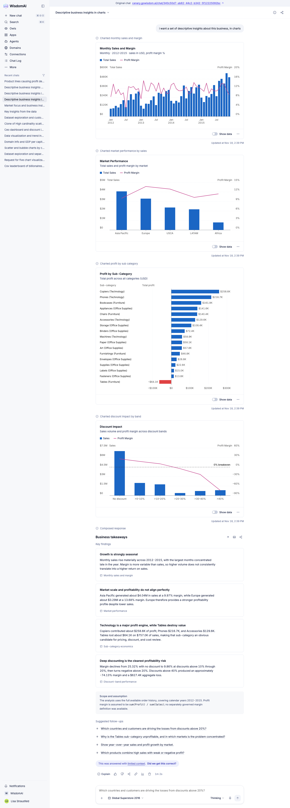

1. Original Wisdom chat: insights in charts
A render of the original Wisdom answer to “i want a set of descriptive insights about this business, in charts”: four charts, then the business takeaways.

2. Chat answer without charts
A render of the Wisdom answer to “i want a set of descriptive insights about this business, not charts”: KPI tiles and nine text-only findings.

3. Redesigned chat answer with charts
The redesign: the same findings as screen 2, each with its chart in the same card.